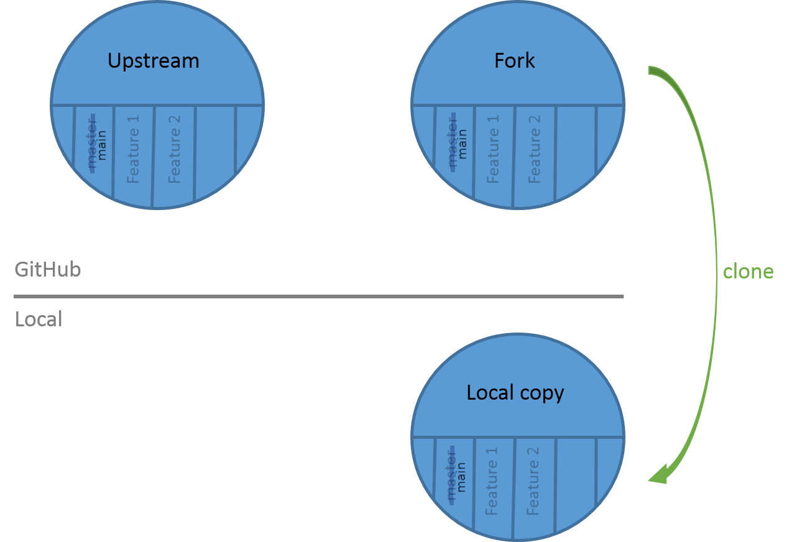

Contributing with GitHub via command-line
Contributors
Questions
How can I contribute to an open-source project with GitHub?
What is the GitHub flow?
Objectives
Fork a repository on GitHub
Clone a remote repository locally
Create a branch
Commit changes
Push changes to a remote repository
Create a pull request
Update a pull request
Steps
-
Fork (copy) a GitHub repository in your GitHub space
-
Clone your GitHub repository on your system
-
Create a new branch (one branch = one new feature)
-
Make your changes on this branch
-
Push your branch on your GitHub repository
-
Merge your branch on the original GitHub repository
1. Fork a repository
Fork from a GitHub repository

Welcome on your fork repository

Welcome on your fork repository

2. Clone your GitHub repository
Get your GitHub URL

Clone your GitHub repository
On your terminal:
- clone your repository
$ git clone your_fork_github_url
- go into your repository
$ cd training-material
Clone your GitHub repository

3. Make your changes
Create your branch
List your branches
$ git branch
* main

Create a new branch
$ git checkout -b my_new_branch
Switched to a new branch 'my_new_branch'
Make your changes
List your branches
$ git branch
main
* my_new_branch

Make changes and commits
$ git add newfile1 newfile2 ...
$ git commit -m "my contribution"

Make changes and commits

Push your branch on your GitHub repository
$ git push origin my_new_branch

4. The pull request
Can’t push on the original GitHub repository

Create your pull request

Select the branches and write a description
Automated tests can be executed
- Green check mark = OK
-
Red cross = not OK
Your pull request is accepted (congrats)
-
Automated tests are ok
-
Authors have accepted your feature
-
Branches are merged
Your feature is now in the original code

Your pull request need modifications (oops)
-
Automated tests are non ok
-
Authors have not accepted your feature
You have to make modifications on your branch and push it
Summary

Key Points
- Work on your fork
- 1 branch = 1 feature
- 1 pull request = 1 branch
- Be careful of the branch you're working on
- Check the automated tests
Thank you!
This material is the result of a collaborative work. Thanks to the Galaxy Training Network and all the contributors! Tutorial Content is licensed under
Creative Commons Attribution 4.0 International License.
Tutorial Content is licensed under
Creative Commons Attribution 4.0 International License.